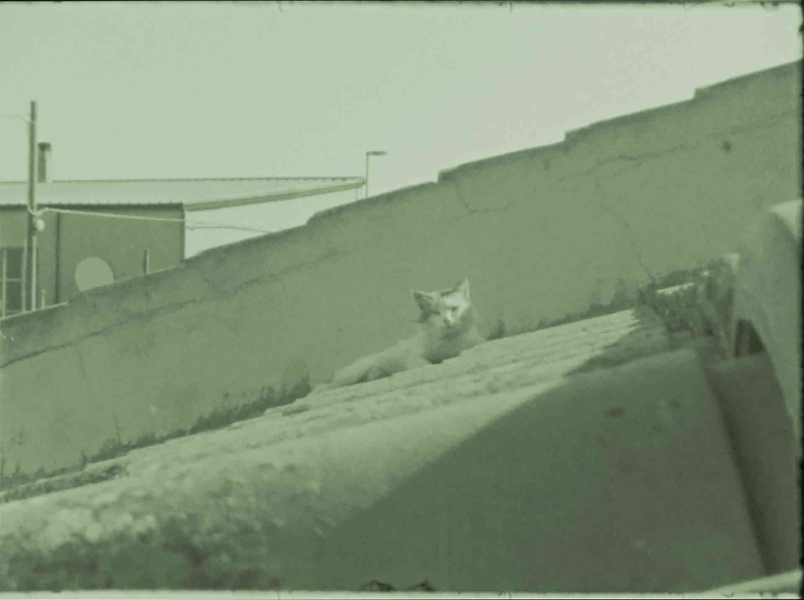

LIA presenta: Spaces of Listening
Tre film sperimentali in presenza dell’artista Alex Lane.
Domenica 2 ottobre 2022
Ore 20:30
Sa Prima Ighina
Via Efisio Marini, 21, Sedilo
Programma:
Goodnight Goodnight
Canada | 2020 | 37min | Diretto da Mackenzie Reid Rostad
Suono di Alex Lane
The Hollow
USA | 2022 | 14min | Diretto da Jean-Jacques Martinod & Bretta C. Walker
Suono di Alex Lane
La Bala de Sandoval
Ecuador | 2019 | 18min | Diretto da Jean-Jacques Martinod
Suono di Alex Lane
I film saranno proiettati in versione originale con sottotitoli in italiano.
LIA presenta: Spaces of Listening
Three experimental films in the presence of the artist Alex Lane.
Sunday 02.10.2022
20H30
Sa Prima Ighina
Via Efisio Marini, 21, Sedilo
Programme:
Goodnight Goodnight
Canada | 2020 | 37min | Directed by Mackenzie Reid Rostad
Sound by Alex Lane
The Hollow
USA | 2022 | 14min | Directed by Jean-Jacques Martinod & Bretta C. Walker
Sound by Alex Lane
La Bala de Sandoval
Ecuador | 2019 | 18min | Directed by Jean-Jacques Martinod
Sound by Alex Lane
All the films will be original versions with Italian subtitles.
